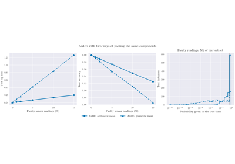
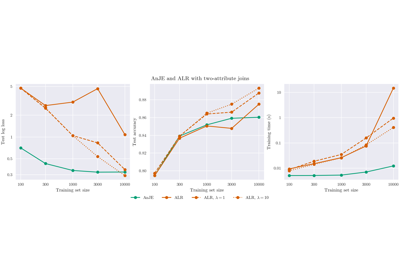
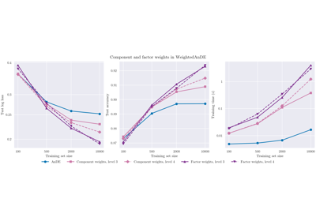
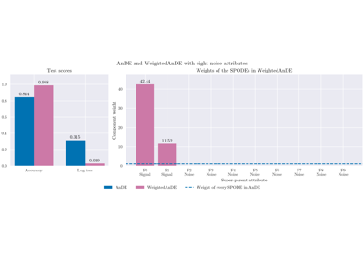
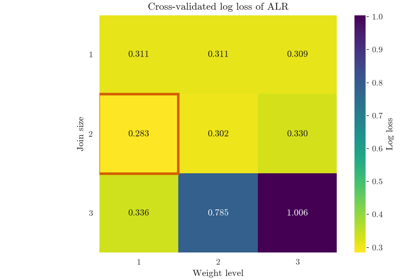

Example Gallery#
This gallery contains examples demonstrating the capabilities of scikit-bayes. All examples use matplotlib for visualization and can be downloaded as Python scripts or Jupyter notebooks.
Start with the tutorial, which follows one problem on real data, a table of labels, from the table to the final evaluation. The other examples mostly use synthetic data, each built to show one property of a model; the last one shows what to expect on a table of continuous measurements.
Tutorial#
One problem on real data from the table to the final evaluation: the Car Evaluation data, a pandas DataFrame of labels fitted without an encoder, a comparison with scikit-learn baselines, a grid search, the learned structure against the known one, the weights, and the test set.

Tutorial: from a table of labels to a fitted network
Mixed Naive Bayes#
The Naive Bayes classifier for data with continuous, categorical and binary attributes, and its equivalence with the scikit-learn estimators.


Generative AnDE Models#
Averaged n-Dependence Estimators: what they solve that Naive Bayes cannot, how their components are combined, and what the order of dependence costs.



Arithmetic or geometric mean with a failing sensor
Averaged n-join estimators#
AnJE and ALR, on discretized attributes or with Gaussian children: what the discriminative weights add to the generative model, and how much data they need.

AnJE or ALR: generative and discriminative n-joins

Tree Augmented Naive Bayes#
A single Bayesian network in which every attribute depends on the class and on at most one other attribute: how the tree is learned and what it captures.

K-Dependence Bayesian Classifier#
A single Bayesian network in which every attribute depends on the class and on at most k other attributes: how k trades expressiveness for data.

Discriminatively weighted models#
Generative models with weights learned discriminatively, on the components of an ensemble or on the factors of a single network (WeightedTAN and WeightedKDB): the granularity of the weights, how to read them and their effect on calibration.

Component or factor weights: data efficiency and cost

Component weights as a selection of super-parents


Discretization#
Supervised discretizers for continuous attributes.


Working with scikit-learn#
Pipelines, preprocessing and model selection around the estimators, and what to expect on a table of continuous measurements.

Pipelines and model selection with scikit-learn

A table of continuous measurements: what to expect